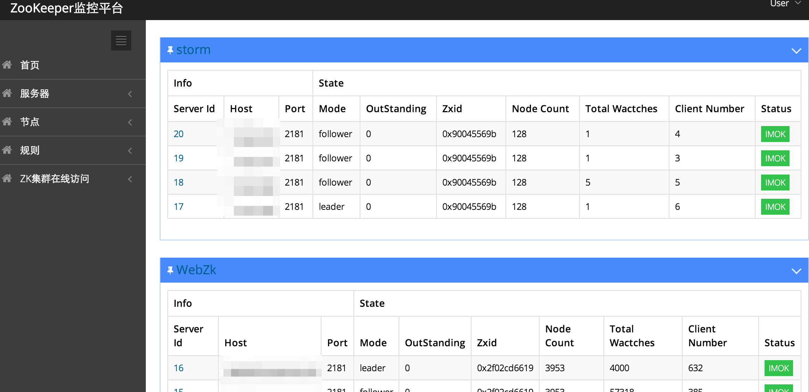
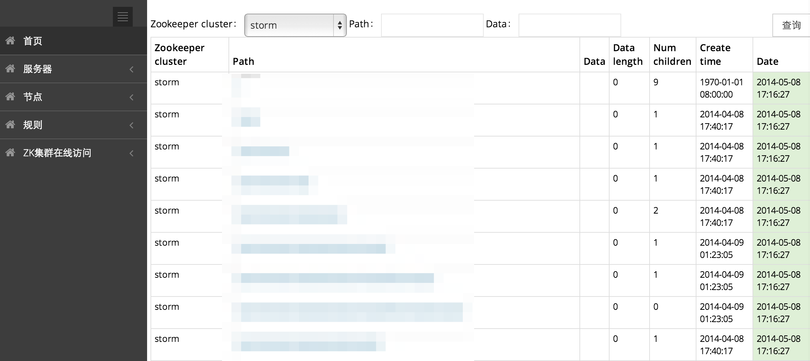
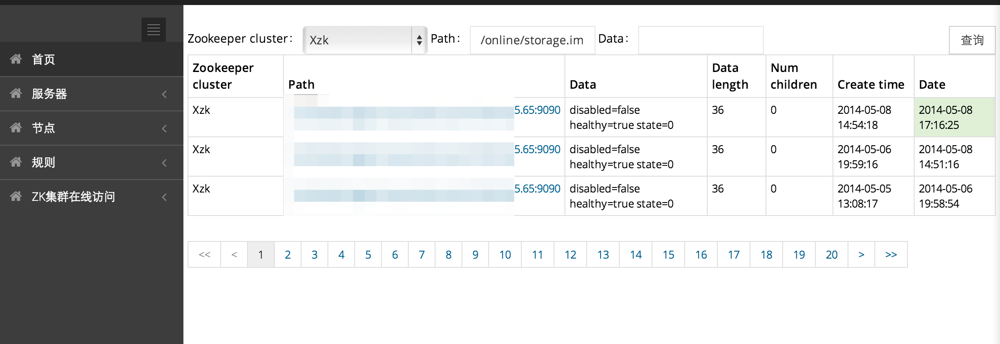
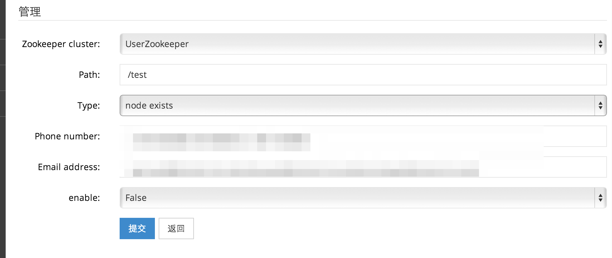
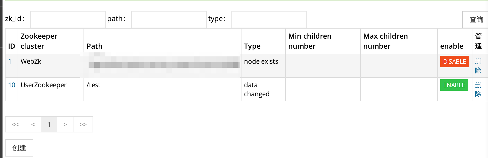

A zookeeper monitor platform. Account/Password=guest/guest ==> http://mario.zipc.me/
A ZooKeeper monitor platform.
一个ZooKeeper的监控报警平台
在线预览
Online Demo
git clone https://github.com/ZheYuan/Mario.git
cd Mario
mysql -u root -p xweb < Documents/Mario.sql
Mario工程是ZooKeeper监控的展示和配置系统。
cd Mario/Mario/thirdparty
unzip springside4-4.0.0.GA.zip
cd springside4-4.0.0.GA
mvn install
vim Mario/Mario/src/main/resources/application.properties
cd Mario/Mario
mvn package -Dmaven.test.skip=true
cp -v Mario/Mario/target/Mario.jar $JETTY_HOME/webapps/Mario.jar
$JETTY_HOME/bin/jetty.sh start
admin:admin
Wario工程是ZooKeeper的监控报警系统。
vim Mario/Wario/src/main/resources/application.properties
DefaultMsgSender/DefaultMailSender或添加扩展的报警类或使用调试的类DebugMsgSender/DebugMailSender
./Mario/Wario/build.sh
./Mario/Wario/run.sh start
IPlugin接口Mario/Wario/plugins/路径，插件将采用反射的方式被载入DefaultMsgSender和DefaultMailSender类发送报警



